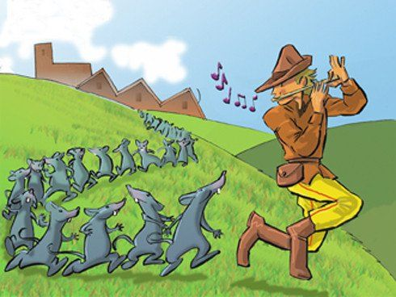
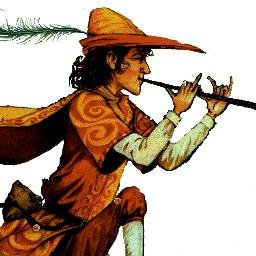

El Flautista de Hamelin
Érase una vez a la orilla de un gran río en el Norte de Alemania una ciudad llamada Hamelin. Sus ciudadanos eran gente honesta que vivía felízmente en sus casas de piedra gris. Los años pasaron, y la ciudad se hizo rica y próspera.
Hasta que un día, sucedió algo insólito que perturbó su paz.
Hamelin siempre había tenido ratas, y bastantes, pero nunca habían sido un peligro, pues los gatos las mantenían a rayo de la manera habitual: cazándolas. Pero de pronto, las ratas comenzaron a multiplicarse.
Con el tiempo, una gran marea de ratas cubría la ciudad. Primero atacaron las tiendas y graneros, y cuando no les quedó nada, fueron por madera, ropa o cualquier cosa. Lo único que no comían era el metal. Los aterrados ciudadanos se manifestaron ante el ayuntamiento para que los librara de la plaga de ratas, pero el consejo ya llevaba tiempo reunido tratando de pensar un plan.
- Necesitaríamos un ejército de gatos.
Pero los gatos ya estaban muertos.
- Deberíamos matarlas con comida envenenada.
Pero apenas les quedaba comida, y el ni siquiera el veneno era capaz de detenerlas.
- Necesitamos ayuda- dijo el alcalde abatido.
En ese preciso instante, mientras los ciudadanos se agolpaban afuera, llamaron fuertemente a la puerta. ¿Quién podría ser? se preguntaban preocupados los miembros del consejo, temerosos de las iras de la gente. Abrieron la puerta con precaución y, ante su sorpresa, apareció ante ellos un hombre alto, vestido con ropas de brillantes colores, con una larga pluma en su sombrero y una larga flauta dorada.
- He librado ciudades de escarabajos y murciélagos - dijo el extraño- y por mil florines, también les libraré de las ratas. - ¡Mil florines!- exclamó el alcande- ¡Le daríamos cincuenta mil si lo hiciera!
El extraño salió entonces diciendo:
- Ahora es tarde, pero mañana al amanecer no quedará ni una rata en Hamelin
Todavía no había salido es sol cuando el sonido de una flauta se escuchó a través de las calles de Hamelin. El flautista fue pasando lentamente por entre las casas, y todas las ratas le seguían. Salían de todas partes: de las puertas, de las ventanas, de las cañerías, todas detrás del flautista. Mientras tocaba, el extranjero bajó hacia el río y lo cruzó. Tras él, las ratas seguían sus pasos, y todas y cada una de ellas se ahogaron y fueron arrastradas por la corriente.
Al mediodía, no quedaba ni una sola rata en la ciudad. Todos en el consejo estaban encantados, hasta que el flautista acudió a reclamar su pago.
- ¿Cincuenta mil florines?- exclamaron - ¡Jamás! - ¡Que sean mil al menos! - gritó furioso el flautista. Pero el alcalde respondió: - Ahora todas las ratas están muertas y no volverán. Así que confórmate con cincuenta florines, sin es que no quieres quedarte sin nada. Con los ojos encendidos de ira, el flautista señaló con su dedo al alcalde: - Te arrepentirás amargamente de haber roto tu promesa
Y desapareció.
Una sombra de miedo envolvió a los consejeros, pero el alcalde se encogió de hombros y dijo emocionado:
¡Qué diablos! Acabamos de ahorrarnos cincuenta mil florines.
Aquella noche, liberados de la pesadilla de las ratas, los habitantes de Hamelin durmieron más profundamente que nunca. Y cuando el extraño sonido de una flauta flotó por las calles al amanecer, solo los niños lo escucharon. Como atraídos de un modo mágico, los niños salían de sus casas. Y de la misma forma que había ocurrido el día anterior, el flautista recorrió tranquilamente las calles, reuniendo a todos los niños, que le seguían dócilmente al son de la extraña música.
Pronto la larga hilera dejó la ciudad y se encaminó al bosque, y tras cruzarlo alcanzó la falda de una gran montaña. Cuando el flautista alcanzó la roca, tocó su instrumento con más fuerza, y en la montaña se abrió una gran puerta que daba acceso a una cueva. Los niños entraron tras el flautista, y cuando el último de ellos se adentró en la oscuridad, la entrada se cerró.
Un gran movimiento de tierras cerró la entrada de la cueva para siempre, y solo un pequeño niño cojo pudo escapar de la tragedia. Fue él quien contó a los angustiados habitantes de Hamelin, que buscaban sus niños desesperadamente, lo que había ocurrido. Y de nada sirvieron todos sus esfuerzos: la montaña nunca devolvió a sus víctimas.
Muchos años tuvieron que pasar hasta que las alegres voces de los niños volvieron a resonar en las calles de Hamelin, pero el recuerdo de la aquella terrible lección permaneció para siempre en los corazones de todos, y fue pasando de padres a hijos a través de los siglos.
